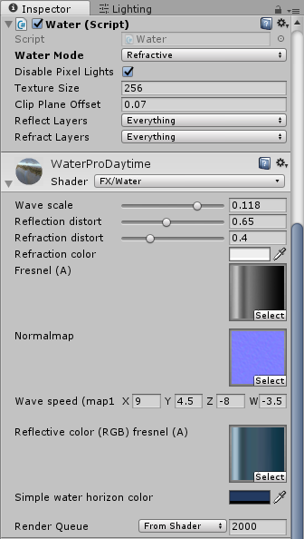
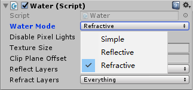

Standard Assets - Water
Unity Standard Assets版本: 5.5.0f3 Personal

Water简介及参数说明
Water位于Assets\Standard Assets\Environment\Water\Water目录下。Water提供基本的水特效。具有动态水波、透明、反射的效果。没有浪花的效果。将Prefabs目录下的prefab拖入场景中即可使用。
更具灵活性的是，Water提供一系列的选项用来调控反射、折射的参数。见下面Inspector中的脚本Water(Script)中的Water Mode, Relfect Layers, Refract Layers选项。



| Water Mode可选项 | 效果 |
|---|---|
| Simple | 水体简单，无反射，无折射 |
| Reflective | 增加反射的效果 |
| Refractive | 增加折射的效果 |
Reflect Layers和Refract Layers是LayerMask，用来控制反射或折射的内容。
| 材质选项 | 作用 |
|---|---|
| Wave scale | 波浪的大小 |
| Reflection distort | 反射的清晰度 |
| Refraction distort | 折射的清晰度 |
| Refraction color | 折射的颜色 |
| Fresnel(A) | 用于控制菲涅耳系数的纹理 |
| Normalmap | 法线贴图，实现水波的波光粼粼 |
| Wave speed | 波浪移动速度 |
| Reflective color fresnel | 反射的颜色和菲涅耳系数（仅仅当Water Mode设置为Reflective时有效） |
| Simple water horizon color | Water Mode为simple时控制水的颜色 |
实现过程
Water(Script)可以接受参数，在Upadte()函数中更新水波的Offset。为了实现反射和折射，脚本生成两个Camera并将Rander Target分别设置为两个渲染纹理。shader运用这两个渲染纹理生成反射折射的效果。